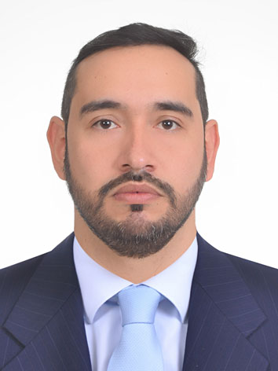

Diego Cruz Ángel
Valladolid, Castilla y León, España
diegoacruza11@gmail.com | LinkedIn
Perfil Profesional
Profesional con experiencia interdisciplinaria y formación en Desarrollo de Aplicaciones Multiplataforma. Enfocado en áreas como IA, análisis de datos, ciberseguridad y desarrollo backend.
Habilidades Técnicas
- Java, SQL, Python (aprendiendo), HTML, CSS, Bash
- Git, GitHub
- Java SE, Swing
- MySQL, pruebas de caja blanca y negra
- Conocimientos en ciberseguridad
- Inglés avanzado (no certificado)
Formación Académica
- CFGS Desarrollo de Aplicaciones Multiplataforma – Valladolid (2024 - En curso)
- Ingeniería de Materiales – Colombia
Formación Complementaria
- Curso de Hacking Ético y Ciberseguridad (60h)
- Curso de Inglés (C1 no certificado)
- RRHH, Gestión de Punto de Venta, CRM
Experiencia Profesional
- Gerente de punto de venta (Subway y otros)
- Ingeniero de planta en metalmecánica
- Investigador en materiales
- Coordinador de valor agregado (RRHH)
Proyectos
- Sistema de gestión de pedidos para restaurante (Java, Swing, SQL)